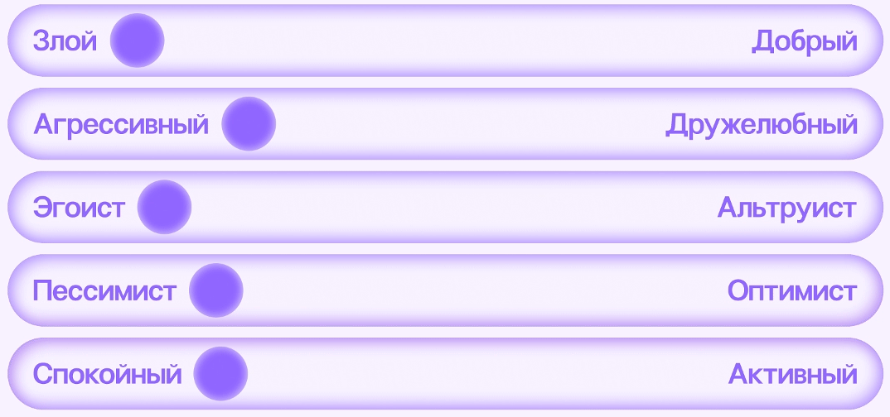

Привет, это easily — медиа о взрослении,
где мы рассказываем, как справляться с трудностями
взрослой жизни.
Здесь мы собрали правила, которые формируют
наш визуальный стиль и помогают сохранять его единым
на всех носителях
Кто мы?
Мы — команда, которая когда‑то тоже терялась во взрослых делах. Теперь мы собираем всё сложное в один понятный гайд, чтобы каждый мог взрослееть без паники и гугления одной и той же фразы по двадцать раз;)
Зачем всё это?
Чтобы у каждого был уголок, где можно спросить «а это точно нормально?» и получить ясный, спокойный и честный ответ. Мы за поддержку, понятность и лёгкое взросление — шаг за шагом.
Характер

Миссия
Мы хотим, чтобы взросление было не стрессом, а понятным и спокойным процессом.
Ценности
Практичность
Даём применимые в жизни инструкции
Уважение
Не обесцениваем страхи и ошибки
Честность
Не создаём иллюзий о взрослой жизни
Логотип
Логотип easily — это шестигранник с названием бренда внутри. Форма выбрана не случайно: шестигранник — визуальная метафора нашей карты компетенций и шести ключевых сфер взрослой жизни. В карте компетенций идеальный, ровный шестигранник означает баланс — момент, когда все навыки прокачаны на 100% и ни одна область не «валится».
Именно к этому мы и стремимся: помочь выстроить взрослую жизнь так, чтобы в ней было меньше перекосов и больше уверенности. Простая геометрия делает логотип современным и понятным, а форма — легко узнаваемой и масштабируемой для любых носителей.
Варианты основного логотипа
Динамика логотипа
Логотип easily — динамичный. В базовом виде он использует фирменный фиолетовый цвет бренда. При работе с отдельными категориями логотип может адаптироваться и окрашиваться в цвет соответствующей категории. Это помогает быстрее считывать контекст и усиливает навигацию внутри медиа.
Чтобы изменение цвета было понятным и логичным, логотип
используется вместе с подписью категории — например:
easily · финансы, easily · быт, easily · документы.
Так цвет
логотипа не выглядит случайным и всегда связан
с темой, о которой мы говорим.
Логотип категории «Финансы»
Логотип категории «Быт»
Пример логотипа на носителе
Палитра
Основная палитра бренда
Фиолетовый — базовый цвет easily. Он используется как нейтральная точка бренда, когда мы говорим о взрослении в целом, без привязки к конкретной категории.
Это все общие коммуникации, презентации, страницы сайта и материалы, где важно подчеркнуть сам бренд. Проще говоря: фиолетовый — это easily как медиа.
#F8F1FF
#9648E7
#E2D1FF
#D4B8F6
Палитры категорий
У каждой категории easily есть собственная цветовая палитра.Цвет категории — это способ быстро считать контекст и тему без лишних пояснений. Палитра категории используется всегда, когда коммуникация посвящена конкретной теме. В этом случае цвет категории полностью заменяет основную бренд-палитру и не смешивается с ней.
Эта логика поддерживается и в графике. Когда мы говорим о категории, на карте компетенций визуально усиливается именно её луч, остальные могут оставаться нейтральными. Так мы показываем фокус: сейчас в центре внимания конкретный навык, и именно его мы «прокачиваем».
быт акцент
#E94B98
финансы акцент
#EA9400
здоровье акцент
#64B032
быт доп
#FDF2F8
финансы доп
#FFFDEA
здоровье доп
#F3FAEB
лайфстайл акцент
#09A0EE
документы акцент
#484BE7
карьера акцент
#F4583F
лайфстайл доп
#FDF2F8
документы доп
#F5F3FF
карьера доп
#FEF4F2
Типографика
Мы используем шрифт TT Commons. Это современный гротеск без лишней строгости: он выглядит технологично, но остаётся дружелюбным и живым. Шрифт хорошо читается в длинных текстах, интерфейсах и заголовках.
TT Commons помогает передать характер бренда — спокойный, поддерживающий и уверенный. Он не давит авторитетом, а объясняет и спокойно ведёт за руку, что важно для медиа о взрослении и повседневных решениях.
TT Commons
AaBbCc123
AaBbCc123
Графика
Графическая система easily построена на метафоре карты компетенций.Мы используем фигуры неправильной формы, которые визуально отражают уровень «прокачки» взрослых навыков пользователя. Каждая фигура состоит из шести углов — по количеству наших ключевых категорий.
Также имеет изменяемую форму: вытянутые стороны показывают, какие навыки развиты сильнее, а какие требуют внимания, и не стремится к идеальной симметрии — форма всегда живая и индивидуальная. Такая графика показывает, что взросление — это процесс, а не фиксированное состояние: у каждого своя конфигурация навыков и свой путь роста.
Иллюстративная система easily строится на мягких изображениях в эстетике миниатюрных тактильных сцен. Мы используем объёмных персонажей без детализированных лиц, чтобы сохранить универсальность и дать пользователю возможность легко соотнести себя с героем.
Мягкие фактуры, округлые формы, размытые края и пастельная палитра делают визуальный язык дружелюбным и бережным. Благодаря этому взросление ощущается не как давление или строгая обязанность, а как понятный, живой и постепенный процесс, в котором у каждого есть свой темп и путь.